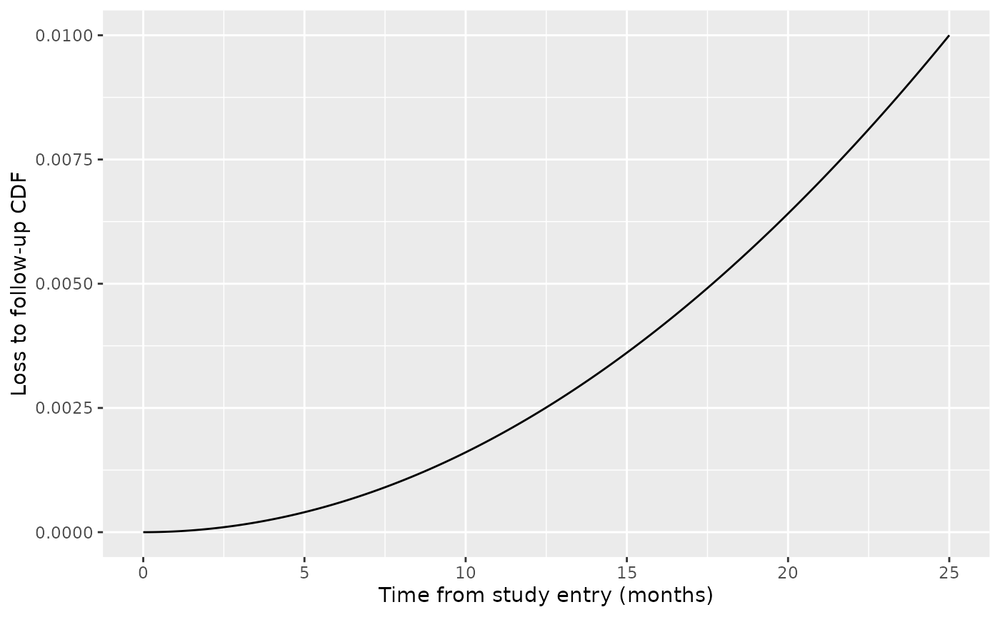
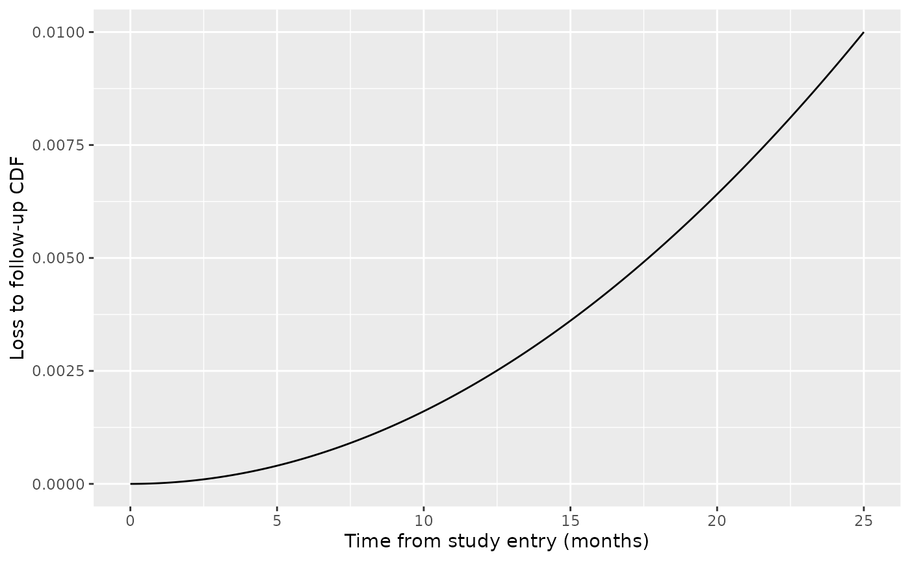
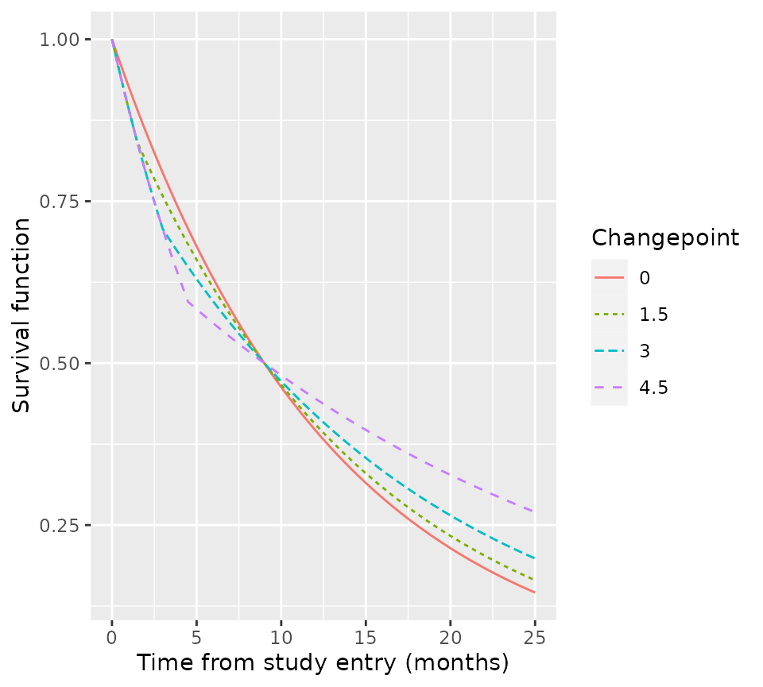
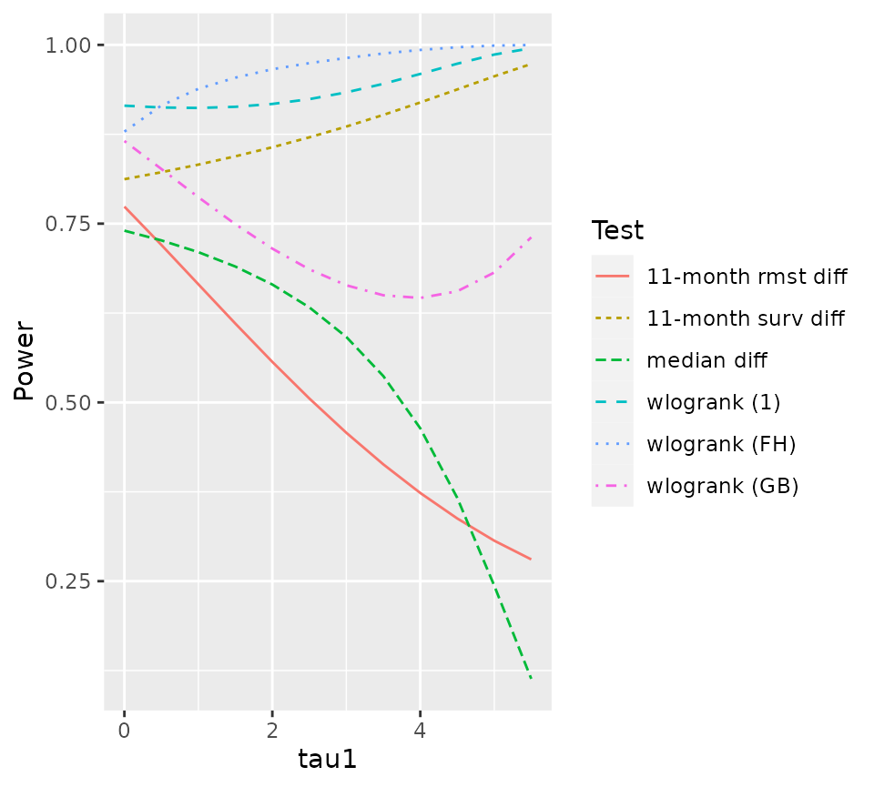

Example 2: Delayed treatment effect
Godwin Yung
2022-08-21
Source:vignettes/example2.Rmd
example2.RmdWe provide here code to replicate Figures 3 and 4A from Example 2 of our manuscript. We rely on R packages tidyverse, plyr, and ggplot2 for cleaner coding and advanced visualizations.
Figure 3
Suppose 240 active and 120 control patients are enrolled over the course of 14 months and followed for 11 months. Assume that accrual follows a truncated exponential distribution with shape parameter 0.1; loss to follow-up follows a Weibull distribution with shape parameter 2 and scale parameter \(log(1/0.99)^{1/2}/25\), so that 1% of patients are permanently censored over 25 months of follow-up; and survivals follow exponential distributions with 9 and 6 month medians. All these information are captured in the following “arm” objects:
# Active
arm1 <- create_arm(size=240,
accr_time=14,
accr_dist="truncexp",
accr_param=0.1,
surv_scale=per2haz(9),
loss_scale=log(1/0.99)^(1/2)/25,
loss_shape=2,
total_time=25)
# Control
arm0 <- create_arm(size=120,
accr_time=14,
accr_dist="truncexp",
accr_param=0.1,
surv_scale=per2haz(6),
loss_scale=log(1/0.99)^(1/2)/25,
loss_shape=2,
total_time=25)To visualize accrual and loss-to-follow-up:
# Accrual
tibble(
x = seq(0, 14, 0.1),
y = paccr(x, arm0)
) %>%
ggplot(aes(x, y)) +
geom_line() +
labs(x = "Time from first patient in (months)",
y = "Accrual CDF")
# Loss to follow-up
tibble(
x = seq(0, 25, 0.1),
y = ploss(x, arm0)
) %>%
ggplot(aes(x, y)) +
geom_line() +
labs(x = "Time from study entry (months)",
y = "Loss to follow-up CDF") 

In the manuscript, we explore the impact on power when survival in the active arm follows instead a 2-piece exponential distribution, where the first piece overlaps with the control arm and the second piece deviates in such a way that median survival remains at 9 months. Denoting the changepoint by \(\tau_1\) and the arm-specific hazard rates by \(\lambda_0\) and \((\lambda_{11}, \lambda_{12})=(\lambda_0, \lambda_{12})\), simple algebra dictates that \(\lambda_{12}=\{\lambda: e^{-\lambda(9-\tau_1)}=\frac{0.5}{e^{-\lambda_0 \tau_1}}\}\). We can utilize functions in npsurvSS to calculate and visualize survival in the active arm under various changepoints:
# Calculate survival curves
x.vec <- seq(0, 25, 0.1) # vector of unique x-coordinates
tau1.vec <- seq(0, 4.5, 1.5) # vector of unique changepoints
arm1t <- arm1 # initialize active arm
y <- c() # vector or all y-coordinates
for (tau1 in tau1.vec) {
# Update scale and interval parameters for the active arm
arm1t$surv_scale <- c(arm0$surv_scale[1], per2haz(9-tau1, 1-0.5/psurv(tau1, arm0, lower.tail=F)))
arm1t$surv_interval <- c(0, tau1, Inf)
# Calculate y-coordinates
y <- c(y, psurv(x.vec, arm1t, lower.tail=F))
}
# Visualize survival curves
tibble(
tau1 = rep(tau1.vec, each=length(x.vec)),
x = rep(x.vec, length(tau1.vec)),
y = y
) %>%
ggplot(aes(x, y)) +
geom_line(aes(color=factor(tau1), lty=factor(tau1))) +
labs(x = "Time from study entry (months)",
y = "Survival function",
color = "Changepoint",
lty = "Changepoint")
Figure 4A
Finally, to calculate power for various non-parametric tests, we take advantage of power_two_arm’s ability to accomodate multiple tests at a time. For the sake of efficiency here, we will only consider changepoints 0, 0.5, 1, …, 5.5. In the manuscript, we consider changepoints 0, 0.1, 0.2, …, 5.9.
tau1.vec <- seq(0, 5.5, 0.5) # vector of changepoints
table_4a <- data.frame(matrix(0, nrow=length(tau1.vec), ncol=7)) # initialize results table
for (r in 1:length(tau1.vec)) {
tau1 <- tau1.vec[r]
# Update scale and interval parameters for the active arm
arm1t$surv_scale <- c(arm0$surv_scale[1], per2haz(9-tau1, 1-0.5/psurv(tau1, arm0, lower.tail=F)))
arm1t$surv_interval <- c(0, tau1, Inf)
# Calculate power and store results
table_4a[r,] <- c(tau1,
power_two_arm(arm0, arm1t,
test = list(list(test="weighted logrank"),
list(test="weighted logrank", weight="n"),
list(test="weighted logrank", weight="FH_p1_q1"),
list(test="survival difference", milestone=11),
list(test="rmst difference", milestone=11),
list(test="percentile difference", percentile=0.5)))$power)
}
# Convert table to long format and re-label tests
table_4a <- gather(table_4a, "test", "power", 2:7) %>%
mutate(test = recode(test, X2 = "wlogrank (1)",
X3 = "wlogrank (GB)",
X4 = "wlogrank (FH)",
X5 = "11-month surv diff",
X6 = "11-month rmst diff",
X7 = "median diff")) %>%
as_tibble()
names(table_4a)[1] <- "tau1"The resulting table looks like this:
table_4a
#> # A tibble: 72 × 3
#> tau1 test power
#> <dbl> <chr> <dbl>
#> 1 0 wlogrank (1) 0.915
#> 2 0.5 wlogrank (1) 0.912
#> 3 1 wlogrank (1) 0.912
#> 4 1.5 wlogrank (1) 0.913
#> 5 2 wlogrank (1) 0.917
#> 6 2.5 wlogrank (1) 0.924
#> 7 3 wlogrank (1) 0.934
#> 8 3.5 wlogrank (1) 0.946
#> 9 4 wlogrank (1) 0.959
#> 10 4.5 wlogrank (1) 0.974
#> # … with 62 more rows
#> # ℹ Use `print(n = ...)` to see more rowsIt can be used to generate Figure 4A in the manuscript:
ggplot(table_4a, aes(x=tau1, y=power)) +
geom_line(aes(color=test, lty=test)) +
labs(x = "tau1",
y = "Power",
color = "Test",
lty = "Test")